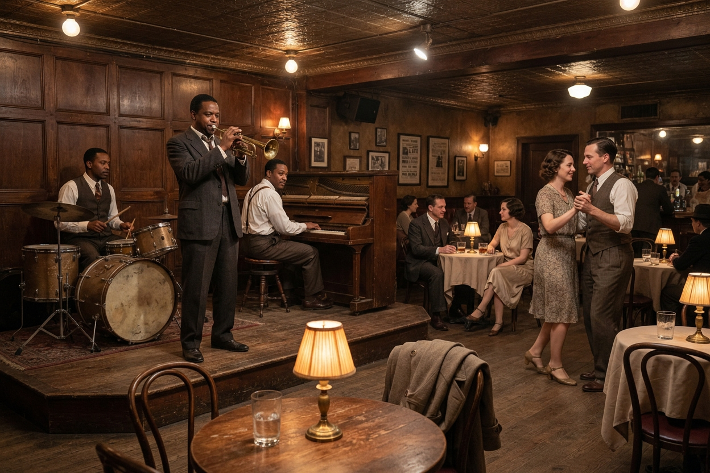
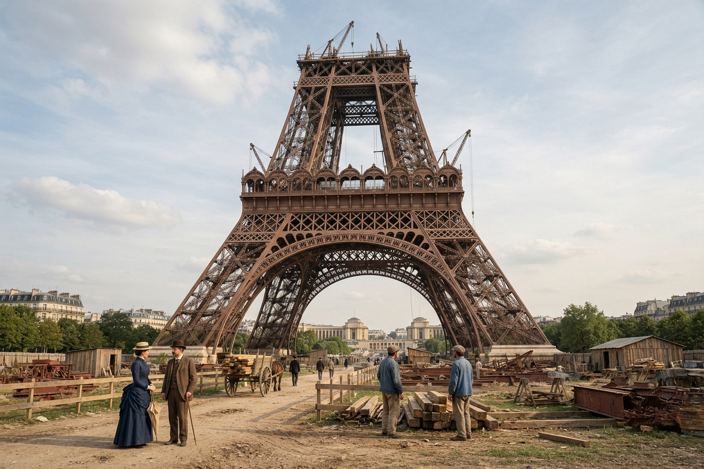

Rome · 125 CE
A weekend in the ancient world
Follow your guide through bustling streets, linger over a Roman feast, and see the city from a long long time ago. Comfortable sandals will be provided.
- Duration
- 3 days
- Pace
- Unhurried, plenty of walking
Extraordinary holidays. Other centuries.
Hear the crowd in ancient Rome. Find your rhythm in Jazz Age New York. Watch the Eiffel Tower go up. We'll take you there and bring you home in time for Monday.
Find your era See how time travel worksSmall groups. Expert guides. Return tickets included.
Start with one of our favorite departures. Every journey includes era-appropriate clothing, a dedicated guide, and somewhere comfortable to sleep.
Rome · 125 CE
Follow your guide through bustling streets, linger over a Roman feast, and see the city from a long long time ago. Comfortable sandals will be provided.

New York · 1926
Step through an unmarked door into a room alive with music. Spend your days exploring the city and your evenings discovering why nobody wants to go home early.

Paris · 1888
Stroll along the Seine, watch the Eiffel Tower take shape above the rooftops, and listen to Parisians debate whether it should exist at all.
Pick a journey or tell us about the era you’ve always wanted to visit. We’ll help you find a departure that suits you.
We’ll sort out your wardrobe, cover the local customs, and explain what not to mention at dinner. You bring your curiosity.
Meet your guide at our departure lounge. We’ll handle the jump, the itinerary, and the journey home.
We travel as guests, not as history’s editors. Our guides help you experience everyday life in another era while keeping your footprint small.
Not on our itineraries. Our journeys follow approved routes designed for observation and low-impact exploration. No election interference, surprise inventions, or helpful stock tips.
Less than you think. We provide era-appropriate clothing and essentials. You’ll receive a short packing list before departure, including which modern items need to stay behind.
We don’t arrange encounters with yourself or your ancestors. Family reunions are complicated enough without temporal physics.
Our standard journeys return you to your departure day. Your booking confirmation will include your exact return time, so you can make plans for the evening.
Your next trip is out there. Somewhere in time.
Pick one of our journeys or propose an adventure of your own. Tell us what you have in mind, and we’ll work out the possibilities. No commitment, and no unexpected visitors from the future.
Fields marked with an asterisk (*) are required.